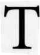

 his chapter begins a systematic review of horary concepts with a focus on how to analyze the chart. First, a word of advice from the scholastic philosopher William of Occam (1285-1349). Confronted with colleagues debating how many angels could dance on the head of a pin, Occam suggested cutting to the heart of a matter. He said that "entities [explanatory assumptions] should not be multiplied beyond what is needed"-a principle now known as Occam's razor. A colloquial translation would be, "Cut the crap," or "Keep it simple." A wise horary astrologer does not use factors in the chart beyond those needed to answer the question.
Horary astrology is the art of answering a question based on analysis of a horoscope for the birth of the question. The analysis proceeds step by step, following specific rules that have proven their worth over centuries. Nonetheless, different systems and, at times, contradictory methods of horary analysis exist. Each practitioner must find an approach that reflects his or her own mental process and use it consistently. Most importantly, the beginner should avoid hit-or-miss, intuitive approaches. An orderly, sequential series of steps produces the most reliable results.
The word horary derives from the Latin word hora, meaning hour. Horary questions are questions of the hour, or specifically, of the moment that the meaning of the question registers in the mind of the astrologer. Such inquiries are usually matters of pressing personal concern that demand immediate answers. Other questions, such as Sara's challenge in the previous chapter, are more for fun and yield entertaining results. In fact, my interest in astrology continues because I enjoy it so much.
Natal astrology deals with the long-term climate and overall trends of a person's life. Horary astrology, on the other hand, is more like a weather forecast. This analogy suggests that certain horary answers may hold true only for a limited period of time. When the weather front passes, you may need a new forecast. Horary astrologers differ, however, on whether they use a time limit for horary charts.
Some horary astrologers assert that the querent may not ask the same question twice under similar circumstances. This rule reflects the traditional wisdom that horary charts will not give valid answers to repeated frivolous inquiries. If you don't like what the initial chart reveals, you cannot keep asking the same question at different times, hoping to eventually get the answer you desire.
William Lilly did allow his querents to ask about the same matter again, provided they were sincere in the inquiry and the initial chart gave an equivocal, indecisive answer. Lilly writes: "When the testimonies of Fortunes and Infortunes are equal, defer judgment, it's not possible to know which way the balance will turn; however, defer you your opinion till another question better inform you."
Once a querent asks a question, the horary astrologer answers it on the basis of a horoscope for the time the astrologer understands the inquiry. To be certain he or she understands the matter, the astrologer must discuss the issue with the querent. The time and place where the astrologer first comprehends the querent's concern is the proper birth time of the question. The horary chart for that moment reveals the symbolic system of the astrologer's mind as it grapples with the querent's concern.
ON DIFFERENT SYSTEMS OF HORARY ANALYSIS
Horary astrology became popular because people wanted to ask questions of the stars but did not have accurate birth data. Many of the rules we use today derive from Lilly's seventeenthcentury text Christian Astrology. Lilly, in turn, took his rules from the astrologers of the Middle Ages and ancient Greece, who borrowed from earlier and often contradictory sources.
Most horary texts after Lilly have simply copied his rules with little thought and even less originality. As a result, the horary branch of astrology withered after the mid-1600s. Notable exceptions are the books by Marc Edmund Jones in 1943, by Barbara Watters in 1973, by Sylvia DeLong in 1980, by Derek Appleby in 1985, and by Olivia Barclay in 1990. In addition, the 1960 text Simplified Horary Astrology by Ivy M. Goldstein-Jacobson is a valuable compendium of rules and tidbits about the art. Simmonite's 1850s work contains valuable descriptions of the quesited according to decanates and facets.
As mentioned, several systems of horary analysis are now in use, and some of these use contradictory and competing methods that can confuse the novice. In this book I have tried to synthesize various schools of thought into an orderly, logical method that works. Where there are differences in the literature I point them out and show how I deal with the issue. In the tradition of Ptolemy and Lilly, I have included only those rules that are theoretically sound and confirmed in my own experience. Readers should test the rules for themselves rather than take my word that they work.
Astrology reflects the historical period in which it is practiced. A rule that was sound centuries ago in a desert climate may not be viable today. The same Sun that brings life to the Eskimo may parch the Arab to death. The idea of a planet being weakened by being close to the Sun is an example of such cultural variance. Some astrologers find this rule helpful while others see no value in it. The symbolism of the Sun may vary with one's culture or position on the globe.
As research into horary astrology continues, some of the rules may need changing. Horary, like all astrology, is an empirical science. It establishes correspondences between the state of the heavens and the affairs of men-as above, so below. As we gain more experience, we will be able to fine-tune some rules and abandon others. The novice at horary will need to keep an open mind and test the various horary rules to decide which ones to keep. The only absolute in horary is that there are no absolutes. The horary rules are really guidelines that are reliable in most instances. Experience is the best teacher. Every practitioner must devise a system of his or her own that is consistent, dependable, and reflects the way his or her mind functions.
This last point may seem odd, but I believe it is the crux of what makes a horary system work. Based on how his or her mind functions, each astrologer will develop a potentially different, though equally effective, system for horary analysis. Joan McEvers, for example, is a native of Aquarius. She takes a detached, abstract, air-sign approach. Like all horary astrologers, McEvers regards the selection of the proper houses as crucial. She sets up a system of clear, abstract rules in which squares and oppositions between the rulers of the querent and quesited give "no" answers; and trines, sextiles, and conjunctions mean "yes." She does not worry about one significator leaving its sign in ephemeris time before the aspect becomes perfect. In McEvers' system, if an aspect will reach symbolic perfection, regardless of actual ephemeris movement of the planets, then the nature of that aspect gives the answer. Her method is different from mine, but we usually arrive at the same answers. Her lectures on horary are wonderful, and she has written a book detailing her approach.
The following example illustrates the difference between our systems. On Sunday, February 3, 1974, a friend of Joan McEvers asked the question "Is my house going to burn down the end of this month?" The time was 2:58 P.M. PST in Canoga Park, California. (See Chart 6, p.38.)
The chart fits the concern of the querent. It is a Sunday and the Sun, a fire planet, is in the 8th house of death and destruction along with Mercury (questions). The Moon, ruling the querent, is in the 12th house of worry and sorrow and describes the state of the querent. Capricorn is on the 7th cusp, and its ruler Saturn, symbolizing the astrologer, joins the querent, symbolized by the Moon, in the 12th. They are worrying together, and Saturn will give the astrologer a hard time in answering this question.
Saturn rules the Capricorn 7th cusp and is retrograde in the 12th house. A retrograde 7th ruler warns the astrologer to look out for a possible error. This retrograde 7th ruler played itself out in an interesting way here. Joan McEvers copied the figure by hand to a blank horoscope wheel and mailed it to me. She listed the time of the chart as 3:58 P.M. PST. When I ran that time through the computer, the chart was an hour off. I called her to check the time and discovered that she had inadvertently written 3:58 when she meant to write 2:58.
Back to the question. Apparently McEvers' friend had read her monthly forecast in Horoscope magazine predicting a fire in her house. She became alarmed and asked a horary question. The chart disturbed both McEvers and her friend, as shown by Saturn and the Moon in the 12th. The Moon, ruling the querent, will oppose Venus, ruler of 4th cusp representing the home that might burn. The two retrograde malefics, Pluto and Uranus, in the 4th house become co-rulers of the property. The querent's Moon will square both these retrograde significators. It looks pretty bad. Maybe we should call the fire department right now! Why wait till the end of the month?
McEvers pondered this chart for quite some time. She took it to other horary astrologers who also interpreted that the house would burn. But February came and went without incident, and today the house is still standing. No fire ever occurred. A lesser mortal might have abandoned horary astrology. McEvers, instead, persisted in trying to understand the meaning of the chart. Like a good Aquarius, she abstracted from the situation and hit upon the cornerstone of her method. McEvers deduced that squares and oppositions mean "no," and trines, sextiles, and conjunctions mean "yes." In this chart and in the McEvers system, the squares and oppositions between the querent's ruler and the property's ruler mean a "no" answer to the original question. The answer is, "No, the house will not burn down."
I approach the same chart differently and arrive at the same conclusion. Because the question is about the home and whether it will burn, I use derivative houses. Real estate belongs in the 4th house. Libra is on the 4th cusp and Venus is the primary significator. Pluto and Uranus in the 4th are secondary rulers of the property.
Since I know of no traditional mundane house for "burning down," I would use Mars as the natural ruler of fires. Lilly relied on the symbolism of Mars to predict the fire of London. If I wanted to use a mundane house, I would use the 8th house of the 4th which is the natural 11th house of the chart. Any 8th house represents the injury or death of its first house occupant.
Chart 6: "Is my house going to burn down at the end of this month?" February 3, 1974, 2:58 P.M. PST, 118W10, 34N20 Koch Houses
The chart confirms my localization because Mars is in the 11th house of the figure. It is helpful to let the chart be your guide. Taurus is on the 11th cusp so Venus becomes the ruler of both the home and its demise. Mars in the 11th is the secondary ruler of the death of the home. Because Mars rules fires and Venus is already the primary ruler of the property 4th, I use Mars as the primary ruler of the "burning down" of the house.
What aspect will Venus make to Mars? Venus is retrograde at 27° 48' Capricorn. Mars is direct at 17° 49' Taurus. They are mutually applying to a trine which will become exact, ephemeris time, on February 23, 1974. Instead of showing a fire at the end of the month, the ruler of the property is making the most favorable aspect possible to the ruler of fires. My answer is, "No, the house will not burn down." The ruler of fire looks with favor upon the home at this time. A square or opposition here would have alarmed me.
In reading over this story, I wondered if the basic horary question here is not whether the house will burn but whether the statement in Horoscope magazine was true. If I had interviewed the querent at the time, I might have rephrased the question to read, "Is the forecast (rumor) true?" I don't place much stock in Sun sign forecasts and regard them as rumors at best.
We locate rumors in the 3rd house. With Virgo on the cusp, Mercury becomes the ruler of the forecast. Mercury is also the natural ruler of reports and communication. Mercury lies in the 8th house as befits a rumor about death and destruction. The end of the matter for the rumor is the 4th of the 3rd, which is the 6th house of the figure. Sagittarius is on the 6th cusp and Jupiter rules the outcome of the rumor, its dismissal to certainty. Mercury and Jupiter make no aspect in this chart. No aspect, no action. Nothing will come of the rumor. It is false. The house will not burn by the end of the month.
We see here two different horary systems and three different approaches to the same chart. They all produce the same answer so long as we are consistent and proceed step by step, according to the method we have chosen. Horary is like that.
HORARY AS HOUSE-CENTERED & MOON-CENTERED ASTROLOGY
Horary is essentially an astrology of the twelve houses of the horoscope. Horary technique answers questions through the mundane houses. The first step in horary analysis is to place the question in the proper house. This is not a static looking up of a word in a rulership dictionary. On the contrary, assigning house rulership requires a dynamic understanding of the querent's relationship to the issue at hand. The ruler, or sometimes the Almuten (most essentially dignified planet at the house cusp), of the house governing the querent's concern becomes the primary significator of the matter. Any planets in that house, or the ruler or Almuten of a sign intercepted in that house, become co-rulers or secondary significators.
There are two crucial steps in horary astrology. First, one must take the correct moment to ask the question and cast the chart. I would like to dispute here the method used in some horary classrooms to gather questions. Some teachers cast a chart for a predetermined time during the class and then solicit questions from the students. This method will not normally produce authentic horary inquiries because the time is chosen arbitrarily rather than when the querent is "most solicitous" about the matter.
Classroom questions may be useful for demonstrating the rules, but the student must be aware that the answer will be no better than chance under these circumstances. Joan McEvers, for example, told me that she once attended a horary workshop with Barbara Watters. Ms. Watters answered questions posed by the students, using a chart cast for a particular moment during the class. Joan kept a log of Ms. Watters' answers and found them all to be wrong! Since the late Barbara Watters was a competent astrologer, I conclude that her method of obtaining questions was at fault. The skeptic will conclude from this example that horary is nonsense after all.
You cannot coax, cajole, solicit, or compel the querent to give you a horary question. Legitimate questions come to the astrologer in their own proper time when the querent feels a pressing need to seek outside help with a matter. Such circumstances are the breeding ground for horary inquiries. You cannot force anyone to seek horary advice, just as you cannot force anyone to engage in psychotherapy. Seek and ye shall not find. Let the universe bring its questions to you. Or, to paraphrase Star Wars, let the force be with you.
The second crucial step is to locate the proper house to represent the matter asked about. If you assign the incorrect house, you will most likely get the wrong answer. Or, more correctly, your answer will be no better than chance.
Why are the mundane houses the crux of horary analysis? Precisely because the house cusps are the most rapidly changing factors in the horoscope. Every twenty-four hours each degree of the zodiac passes over the Ascendant. On average, a new degree rises every four minutes. Because the house cusps move so rapidly, they symbolize the ever-changing concerns of us humans. According to John and Peter Filby, "House division is an important astrological concept, as it is the only factor which alters in a short space of time. Without this division, the relationship of man to his environment would be difficult to ascertain."
Besides the house cusps, the other rapidly changing astrological factor is the Moon, which spends only slightly over two days in each sign and moves about one degree every two hours. In astrological symbolism, the most rapidly changing factors in a chart govern the ephemeral conditions of daily life and thought. If we liken the horary chart to a cosmic clock, the house cusps become the clock's second hand and the Moon, its minute hand. The changing house cusps together with the Moon stand for the fluctuation of the world at large.
The Moon has a special significance in horary as an indicator of the general or trivial conditions that surround a question. She serves as a secondary significator of the querent and of the question when the primary significators fail to provide an answer. The Moon is a backup when the house rulers are not useful. Sue Ward considers the Moon to be a "general significator in all questions." She adds that the Moon "usually shows the events and activities relating to the matter" and as such "can often show timing."
Because of the Moon's rapid motion, many horary astrologers assign her to all change and activity in the chart. The Moon rules the tides of the oceans and of men. All the aspects the Moon makes before leaving its sign will show the general outcome of a question or event begun while the Moon is in that sign. The most recent aspect the Moon made before the question shows what led up to the question. The last aspect to which the Moon will apply before it changes sign reveals the general but not necessarily the specific outcome. As the Moon goes, so the flow of life goes; but it is the aspects made by the primary house rulers (significators) that show the specific outcome. Unlike horary astrologers who rely primarily on the Moon, I regard the more quickly changing house cusps as primary. In my system the Moon is secondary but important.
SOME BASIC DEFINITIONS OF TERMS USED IN HORARY
Querent and Rulers of the Querent
The querent is the person who asks the question. The primary significator of the querent is the planet ruling the Ascendant. Any planets in the first house and the ruler of an intercepted sign in the first house become secondary rulers of the querent. The Almuten (the planet with the most essential dignity) of the Ascendant and of any intercepted sign in the 1st house may also be a significator. The Moon is always a secondary or co-ruler of the querent and of the question. Aspects involving primary rulers are more significant than aspects involving secondary rulers.
Quesited and Rulers of the Quesited
In horary astrology it is useful to keep matters as simple as possible. To this end, I call the person asking the question the "querent" and the matter of concern the "quesited" or simply the "question." The quesited is the person or the matter asked about and is ruled by the proper house. For example, relationship questions are ruled by the 1st and 7th houses, financial questions by the 2nd and 8th, travel questions by the 3rd and 9th, and so on.
The primary ruler of the quesited is the planet ruling the sign on the cusp of the house that locates the matter. Lee Lehman takes the Almuten (the planet with the most essential dignity at the house cusp) as the primary ruler when the Almuten has more dignity than the planet ruling the house cusp. Secondary rulers (co-rulers) are any planets within the focal house and the ruler of any sign intercepted in the house of the quesited. Bonatus also uses the planet with which the Moon next makes a major aspect as a co-ruler of the quesited. As with the querent, aspects involving the primary ruler of the quesited carry more weight than aspects involving the secondary rulers.
Derived Houses
If a question involves something belonging to or related directly to the querent, then the usual house system holds for interpreting the chart. When the querent asks about someone else's belongings or relationships, we use a system of derived houses. To determine derivative houses, we regard the house representing the person or matter asked about as a new first house. In other words, we begin counting derivative houses from the house of the quesited as the new 1st house.
We have already seen several examples of derived houses. If the question is about a child's book, the 5th house of the figure rules the child. The child's book is ruled by the 3rd house of the 5th, which is the 7th house of the chart. Similarly a child's illness is ruled by the 10th house, which is the 6th house of the natural 5th house of children.
If the question is about a sibling, the new first house is the natural 3rd house of the chart. The natural 4th house becomes the derivative 2nd house, the natural 5th house becomes the derivative 3rd house, and so on. With practice, deriving houses becomes automatic.
The arithmetic of finding the derivative house is to take the number of the house of the quesited, add the number of the derived house you are looking for, and subtract one. The answer will be the number of the natural house of the figure that corresponds to the derivative house you want. For example, if the quesited is a co-worker, the house of the quesited is the 6th. If you want the 8th house of surgery of the co-worker, you add 6 + 8 - 1 = 13. If the answer is greater than 12, you subtract 12; thus 13 - 12 = 1. The first house of the natural chart is the 8th house of the quesited co-worker shown by the 6th.
For fun, I will take an example from the movie Spaceballs by Mel Brooks. When Lonestar confronts Dark Helmet toward the end of the film, Dark Helmet says to him, "I am your father's brother's nephew's cousin's former roommate."
"What does that make us?" asks Lonestar.
"Nothing," replies Dark Helmet.
Let's see what astrology has to say about their relationship. Where would we locate the querent's father's brother's nephew's cousin's former roommate? The querent is in the 1st, his father is in the 4th. The father's brother is in the 3rd of the 4th, which is the 6th. The father's brother's nephew is the father's brother's sibling's child. The father's brother's sibling is in the 3rd of the 6th, which is the 8th. The child of that sibling is the 5th of the 8th, which is the 12th.
So far we have gotten to the nephew. The nephew's cousin is the 3rd of the 12th, which is the 2nd. The 3rd is the generic house of cousins. If you know the lineage, you can locate a cousin more specifically in the 4th (mother's sibling's child) or the 10th (father's sibling's child).
Since we don't know if the cousin is paternal or maternal, we use the 3rd house of generic kin. Finally, the roommate is in the cousin's 7th, that is, the 7th of the 2nd, which is the 8th house of the natural figure. Unrelated other people with whom one has dealings are found in the 7th. We conclude that Dark Helmet bears an 8th house relationship to Lonestar. The symbolism of the 8th as the house of death fits because at this very moment in the movie Dark Helmet is trying to kill Lonestar.
If you followed the above example, pat yourself on the back. You're well on your way to becoming a horary astrologer.
WHAT IS A VALID HORARY QUESTION?
Not all musings are legitimate horary questions, and astrologers disagree on which inquiries they will subject to horary analysis. Many ideas occur to us daily. They become matters of horary analysis only when they are issues of pressing personal concern and we enlist the aid of an astrologer. Each practitioner needs to decide which types of questions to accept in his or her practice.
Most astrologers believe that a horary question must represent a concern or crisis, however minor, in the life of the querent. They feel that horary analysis will not yield dependable results for matters over which the querent has no responsibility or personal concern. On the other hand, what seems trivial or irrelevant to the astrologer may be a matter of import to the querent.
According to Jones, the most pertinent horary questions are those related to the outcome of a specific current decision or action. Horary technique will not answer static questions like "What is the color of my hair?" A question such as "What will be the outcome of coloring my hair?" will yield accurate results if it matters to the querent. Jones suggested phrasing horary inquiries in the form, "What will be the result or outcome of doing something or making a decision about some specific matter?" Such phrasing takes advantage of the principle of cosmic sympathy, that the motions of the planets parallel the flow of the affairs of men. Even so, you may not be able to phrase all questions in this form.
Another group of widely accepted horary questions relates to lost or stolen items. Such questions include "Who stole my watch?" and "Where is my runaway child?" The astrologer can use the chart to describe the thief or locate the missing person or thing.
Although a horary chart may be able to answer a question such as "Will I ever marry?" it is usually better to use natal methods for such an inquiry. Many natal astrologers, however, decline to answer this question with a simple yes or no. They prefer to counsel the querent about factors in the natal chart that show difficulties in relationships so that marriage might become possible. The issue is more one of ethics and philosophy than technique.
Some modern astrologers feel that a horary interpretation will not hold true indefinitely and therefore impose a fixed time limit. William Lilly did not use a time limit for horary inquiries. He took questions as they came. For example, he answered a question posed by a woman on June 22, 1635, at 9:30 A.M. in London, "Will I ever have children?" Lilly responded, "I declared, positively, that she never would have any children, according to the rules of the science." (See Chart 7, p. 44.)
Lilly reasoned as follows. At the time the woman asked about having children, the barren sign Virgo was rising. The woman's ruler Mercury was in the terms of Saturn at 24° Gemini, a somewhat barren sign. Capricorn ruled the 5th house cusp of children. Saturn, primary ruler of the pregnancy 5th house, was retrograde at 29° Sagittarius in the 4th house of conception.
The woman's ruler Mercury was approaching an opposition to Saturn, significator of the 5th house pregnancy. Saturn was retrograde in the 4th house of conception and simultaneously applied to an opposition with Mercury. The malefic Moon's South Node conjoined the Ascendant, a symbol of the querent's body. All these were strong arguments of barrenness.
Furthermore, the Moon (pregnancy) in the last degree of Virgo is applying (by dissociate aspect) to a square with the Sun (vitality, new life) in the first degree of Cancer. Lilly did not consider this Moon to be void of course because it was within orb of squaring the Sun once it changed signs. In addition, Venus (ruler of the 6th house of the health of the 5th house fetus and dispositor of the Part of Children (Pars Filiorum at 21° 16' Libra in Lilly's original chart) is conjunct the malefic fixed star Caput Algol and is also quincunx the Part of Children which she disposes.
Lilly regarded the Moon (the querent) squaring Saturn (6th ruler of illness) to signify the sickly state of the woman. Of note, the Moon lies in Virgo and Saturn in Sagittarius, both signs of long ascension. In other examples, Lilly would have stretched this square into a trine and given it a positive interpretation.
While Lilly shows technical skill in answering the question, one must wonder about the psychological impact of his pronouncement on the querent. When a horary chart gives a clear-cut "no" with an indefinite time limit, is it ethical to reveal the answer? Avoiding questions without a time limit may be the route to follow. I usually refuse to answer such questions. If I am wrong-and astrologers do make mistakes more often than they are willing to admit-I have incorrectly dashed the querent's hopes for life.
Since the accuracy of horary analysis depends on proper placement of the question around the horoscope wheel, the phrasing of the question is critical. When possible, state the concern in terms of traditional house rulerships. Where mundane house rulerships don't seem to apply, you can use the natural planetary ruler of the matter.
The astrologer may need to help the querent phrase the question. Horary astrology can only answer the exact question asked and intended, no more and no less. Once the astrologer and querent have committed to the wording (and meaning) of a question, they cannot go back and alter it. Nor can they expect to derive answers to afterthoughts or new questions about the matter from the original chart.
An example may help clarify some of these points. A friend of mine asked whether a ceremony honoring a certain film maker would take place in London. I cast the chart and gave a "no" answer. I was wrong. The symposium occurred as scheduled and the film maker received his accolades. Only when I reviewed the question with my friend did I learn that he really wanted to know if he would be able to travel to London to be present at the ceremony. The answer to that question was "No." He was unable to leave New York and spend time in London. I had not truly understood the question he was asking. The question I did answer was of no direct personal concern or responsibility to the querent. This may sound like I'm a sore loser or a Monday morning quarterback, but I prefer to think I got the wrong answer because I didn't follow the basic rules of horary technique.
Chart 7: "Will I ever have children?" June 22, 1635, 9:30 A.M. GMT, 00W10, 51 N30 Regiomontanus Houses
This example also shows why the astrologer should write down his understanding of the question for later reference. In addition, the astrologer should also record his or her steps in locating the question and interpreting the chart. Failure to keep accurate records is a common mistake. Put it in writing and you will proceed step by step to a correct answer. You will also be able review your mistakes and add to your knowledge.
A SOMEWHAT ATYPICAL HORARY QUESTION
Chart 8 illustrates a somewhat unusual yet legitimate horary question. My friend Don called long distance on Sunday evening, October 15, 1989, to ask the advice of the stars in finding a new secretary for his office in Maryland. It was 10:22 P.M. EDT when he asked, "Would you do a chart to tell me how to get an office secretary?"
Chart 8: "Tell me how to get an office secretary" October 15, 1989, 10:22 P.M. EDT, 73W01, 41 N19 Koch Houses
I wrote down the question word for word along with the exact time. The rest of my week was busy, and I didn't have a chance to look at his chart until Thursday. Saturn on the 7th cusp warned that I might have difficulty reading the chart. It also showed my delay in looking at the chart.
I decided to approach the chart as if I were looking for a missing person. I located the secretary in the 6th house, which rules employees and those who serve. With Saturn and Uranus in the 6th, I knew she would be a serious, well-organized, and unusual person. There might also be some unexpected delay in finding her.
Sagittarius is on the 6th cusp, making Jupiter the primary ruler of the sought after secretary. Jupiter at 10° 36' Cancer in the first house is just two degrees away from conjoining the Ascendant at 8° 26' Cancer. To me this meant that within two days (by Tuesday) something definite would happen regarding the secretary. It was already Thursday, and I wanted to kick myself for not reading the chart sooner. I should have returned Don's call before Tuesday to alert him that something positive would happen on that date.
I was certain something good was coming because Jupiter is exalted in Cancer and strong in the first house. Since the Ascendant rules Don and Jupiter represents the secretary, she was coming to Don on Tuesday. With Jupiter in Cancer, I expected her to be fat. With Jupiter so near the Ascendant, I thought she would come from the east (Ascendant) and then north because Cancer is a northern sign. Jupiter can also symbolize people of foreign background or those who come from a distance.
Because Don wanted advice on how to find a secretary, I also looked to the benefic Venus and the Lot of Fortune. Venus was in the 5th house. This puzzled me. Would he find a secretary through a child? Pars Fortuna was in the 7th. I would advise him to ask his partners for a lead in finding this person. When I called Don on Thursday night, I told him my findings almost word for word as I have written them above. He chuckled and said, "I'm amazed. There's a woman we really want for the position and she fits the description."
The woman under consideration comes from New York City, east and north of Maryland at some distance. She heard about the job through Don's ex-wife and former "partner." She is planning to move to the Washington, D.C. area to attend law school (Jupiter), but she is looking for work because she is pregnant (5th house) and will not start school for a year. She is organized and serious (Saturn) and has many unusual interests (Uranus). She was supposed to be interviewed on Tuesday but had to reschedule. Don interviewed her on Friday, the day after our phone call. He was so impressed with her qualifications that he offered her a job, and she accepted it. He has been very pleased with her performance.
WHAT THE ASTROLOGER DOES WITH THE QUESTION
By now you should have a good sense of what the astrologer does with a question that comes at a moment of pressing concern for the querent. By way of review, he or she has a threefold task. First, the astrologer must discuss the matter with the querent to be sure he or she knows what the querent is asking. This active process of understanding the question converts it into a matter for horary analysis. The astrologer should keep a written record of the question word for word, his understanding of it, and the steps he took to solve the puzzle.
The astrologer's second task is to locate or "focalize" the question in one of the twelve mundane houses. This process is akin to focusing the light of the Sun with a magnifying glass so it comes to an intense point of concentrated energy capable of starting a fire. The astrologer's skill at focalizing the matter separates the novice from the professional.
The final task of the astrologer is to analyze the focalized question through a step-bystep procedure to arrive at the answer. There are many systems in horary. I outlined my method in the previous chapter and will detail it throughout the text. Consistent use of a reasonable system is the secret of success.
For questions with yes or no answers, the astrologer has a fifty-fifty chance of being correct without casting the chart. The astrologer should tally his or her answers and their accuracy. If the accuracy rate is less than fifty percent, the astrologer is using an incorrect technique. He or she is either accepting inappropriate questions or using faulty rules for analysis. Any horary method should be at least as accurate as a weather forecast, which it so closely resembles. A score of eighty to ninety percent correct deserves an "A."
AN EXAMPLE OF A FOCALIZED QUESTION
Chart 9 is an example of a focalized question. On Saturday evening, July 6, 1996, I could not find the hand-held remote controller for the TV in our bedroom. After a careful search of the room, I asked my wife and my two sons if they had seen it. They had not. I went to the computer to look at a horary chart (set for 10:24 P.M. EDT, 73W04, 41N16) for the question, "Where is the missing TV clicker?" Aquarius (sign of electronics) rises, as fits a question about a television. I am signified by Saturn (traditional ruler of Aquarius) and coruled by the Moon. The missing object is shown by Mars, which is both the ruler of the 2nd house (possessions) and the dispositor of Pars Fortuna (one's goods and fortune). Mars lies in Gemini in the angular 4th house. The horary rule is that when the significator in an angular house (1, 4, 7, or 10), the missing object is in the home and should be easy to find. Moon (me) will sextile Mars (the clicker) in 11 degrees from an angular house and cardinal sign. Will I get the clicker back in 11 minutes?
Chart 9: "Where is the missing TV clicker?" July 6, 1996, 10:24 P.M. EDT, 73W04, 41 N16 Regiomontanus Houses
Moon and Sun are in mutual reception by sign/exaltation. The Sun rules the 7th (the spouse), so maybe my wife will find the clicker for me. As I was analyzing the chart, my wife entered the room with the TV clicker. Where did she find it? Under my twelve-yearold son Aaron's bed. The 5th house rules one's children. Gemini is on the cusp of both the 4th and 5th houses, connecting the missing TV clicker (Mars) in the 4th with my son in the 5th. Mercury (my son) is the dispositor of Mars (the clicker) in Gemini, and Mercury will conjoin the Sun (7th ruler, my wife) in 5 degrees in a cardinal sign, suggesting 5 minutes. Furthermore, the radical 4th is the 12th (bedroom) of the 5th (child) and, had I been a smart enough astrologer, I would have looked under Aaron's bed to find the clicker before my wife did (and she without the aid of astrology).
Why Aaron's bedroom and not my older son David's room? Perhaps because Aaron is an Aquarius, the sign ascending in the horary. David is a Taurus, ruled by Venus, which is approaching a conjunction with Mars, the clicker. If my wife had not found it, there is a good chance that David would have. Then again, my wife (7th, the Sun) is a Taurus (ruled by Venus) so it was doubly indicated in this chart that she would find the missing object.